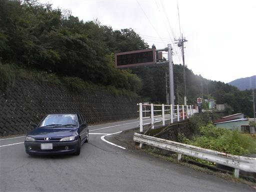
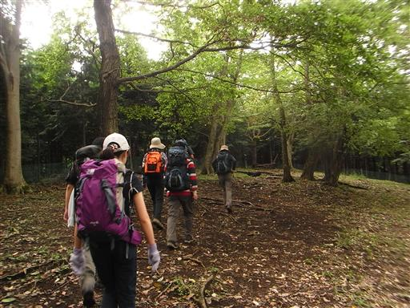
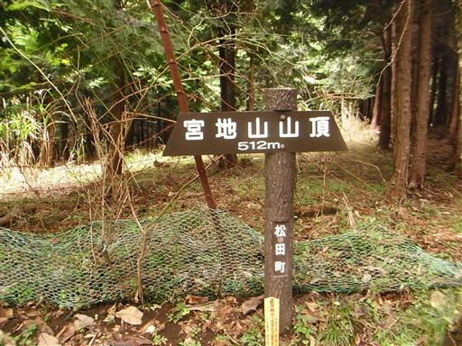
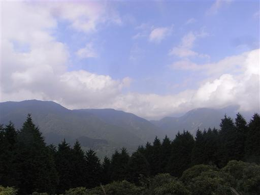
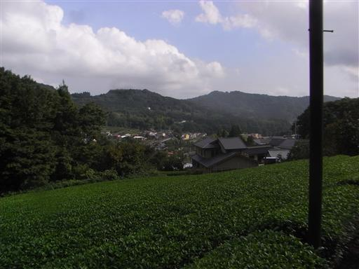
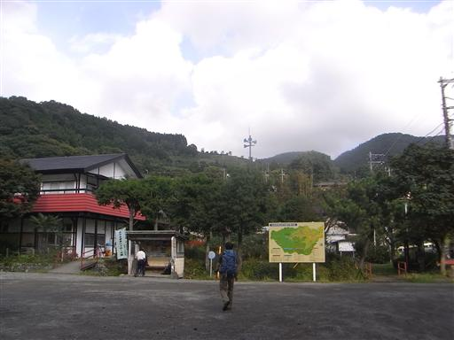

シダンゴ山
| 日付 | 2009年10月4日（日） |
|---|---|
| 山域 | 丹沢 |
| メンバー | グループ（男6女5） |
| 山行形態 | 日帰り |
| アクセス | 電車、バス |
| ルート (Map) | 田代向→宮地山→シダンゴ山→寄 |
丹沢にある変わった名前の山、シダンゴ山。
名前の由来はよくわからないが、展望がよい山らしいので行ってみることにする。
10:10 田代向バス停到着。標高240m。
本日は曇り空だ。

あまり特徴のない樹林帯の中を登っていく。

そして何の変哲もない宮地山山頂に到着。
展望も何もないので、小休止したらシダンゴ山に向かう。

12:29 シダンゴ山山頂到着。標高758m。

北方は丹沢山塊の山々が見渡せる。少し青空が出ている。

南方の下界方面は、低い雲が垂れ込めてどんよりとしている。
晴れていれば富士山も見えるはずなのだが…

下山道からは茶畑が見える。
ここはもう静岡に近いところなので、茶所なのだろう。

14:18 寄バス停到着。標高285m。
暖かい日の小さなハイキングだった。

他の山行記録